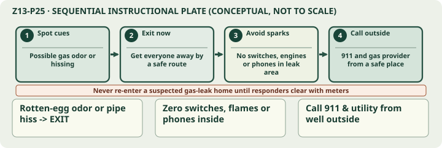

Z13-P25 · Home survival and utilities · New manuscript
Evacuate immediately on suspected natural gas or propane leaks
Prevent catastrophic residential gas explosions through zero-spark immediate evacuation and utility dispatch from outside.
When it applies · Any home, basement, or yard heated by piped natural gas or exterior propane (LP) tanks.
Equipment · Outdoor meeting point and utility emergency phone number accessible from outside the home.

Actions
- Recognize gas-leak warning signs immediately: distinctive rotten-egg/sulfur odor (mercaptan), hissing or whistling sound near pipes/appliances, blowing dirt/bubbling water outside, or dead vegetation over a buried gas line.[U11]
- Leave the building IMMEDIATELY with all occupants and pets, leaving doors open behind you—do NOT flip any light switches, unplug appliances, light matches, start cars in the driveway, or use landline/cell phones INSIDE the building (tiny electrical sparks ignite gas mixtures).[U11]
- Walk well away from the structure (upwind if outdoors) and call 911 AND your gas/propane utility emergency line from a safe distance; NEVER re-enter until fire/utility responders clear the building with gas meters.[U11]
Failure recognition · Flipping on a basement light switch to look for the source of a rotten-egg smell near the furnace, triggering an explosion.[U11]
Verify · Confirm zero switches/phones touched indoors, all occupants accounted for well outside, and 911 + gas utility notified.[U11]
Stop or change course · Any persistent sulfur odor, pipe hissing, or dizziness near gas appliances mandates instant zero-spark evacuation.[U11]
Evidence and editorial notes
- U11 · FEMA / Ready.gov · Hazardous Materials Incidents (current web edition)
- Section: Natural Gas Leaks, Fuel Odors, and Utility Shutoff Boundaries · Conditions: Suspected household natural gas, propane, or fuel-oil leak
Support: If you smell rotten eggs/mercaptan or hear hissing near gas lines, leave the building immediately without toggling light switches or using phones inside, and call 911 and the gas utility from outside; never turn gas back on yourself.
Limitations: Only the gas utility or licensed technician may restore shut-off gas service and relight pilot systems safely. · Conflicting evidence: None; critical residential utility stop condition.
Editorial note: Establishes strict utility-leak evacuation and licensed restoration gates. · Specialist reviewer: Gas utility safety and fire service
Primary source · checked 2026-11-24
Source lineage · FEMA Ready.gov Hazardous Materials; new manuscript · Classification · New manuscript.